Quran Tracker
Actual local Android captures and a separately labeled isolated web community check. The newest evidence appears first; older passes below remain historical. These captures do not establish full migration, authenticated native Groups, or iOS behavior.
Current Android: book, translation and real card stack
14 November 2026. The book and Dutch panel are final F11 captures; selection and scroll interaction captures are F9 evidence with the same accepted reader source and normal stack geometry. Five ordinary book openings retained fifteen lines, copied Arabic matched its source, and F11 also passed dynamic reduced-motion and control checks.

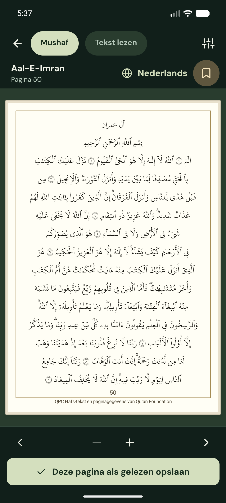
Normal dock, Continue and Text/Book paths share the same presentation choice.

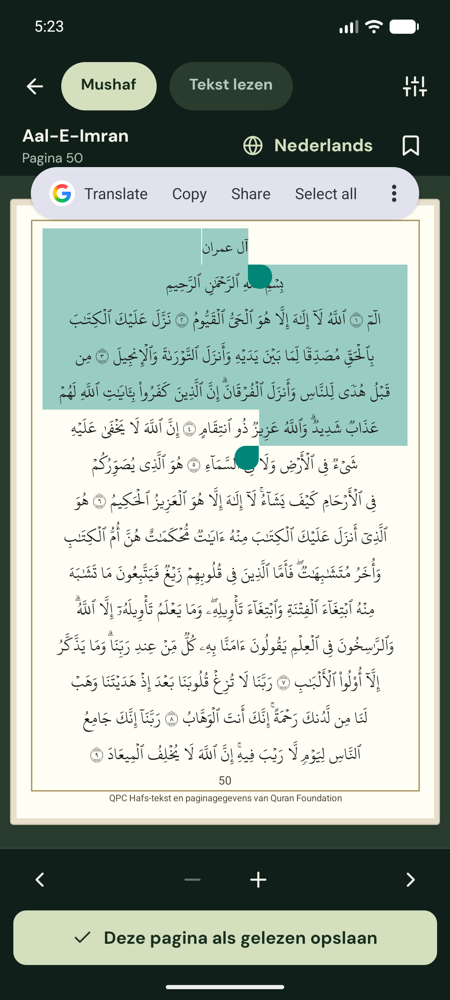
The copied passage matched 362 source Unicode codepoints after whitespace normalization only.

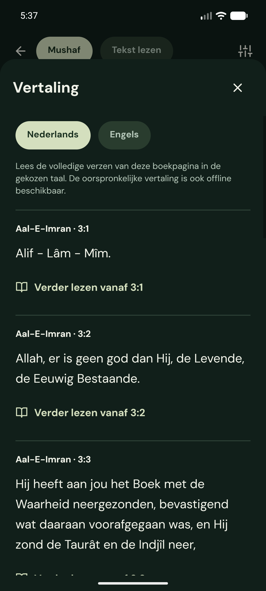
Full original verses, with a separate English choice and a continuous text-reader action.

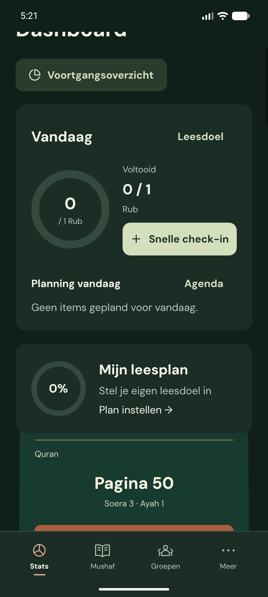
Held and reversed positions match; visible staged and foreground controls were exercised.
See the unfolded spacing · F11 with reduced motion enabled · Watch the unaltered Android scroll recording · Assessment and route to a 10


Isolated community check: web only
Two fabricated localhost accounts posted and replied through the UI. Refresh preserved both unsent drafts while loading the other account's new content. This is a group feed with reply threads; native acceptance and realtime chat are still open.
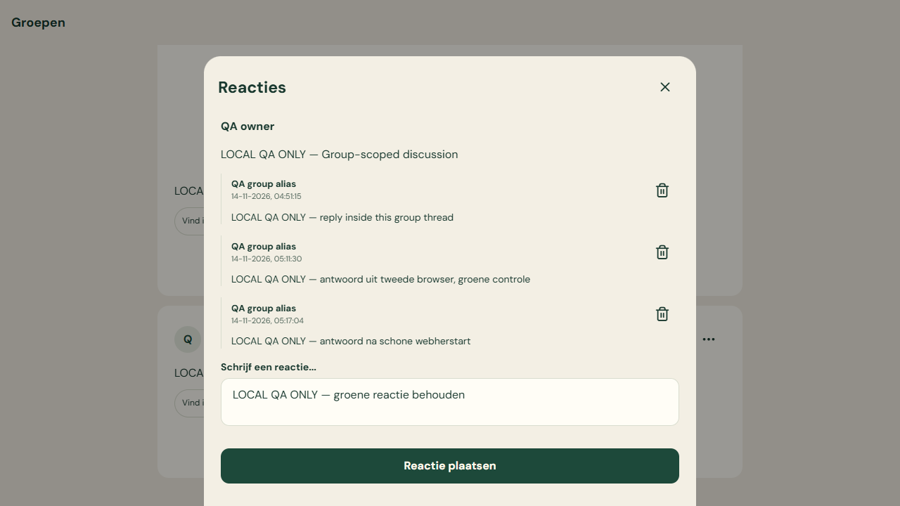
Dutch release follow-up
These are genuine release 2b captures in Dutch and light mode. The subsequent dashboard statistics shortcut and migration changes are not shown here.
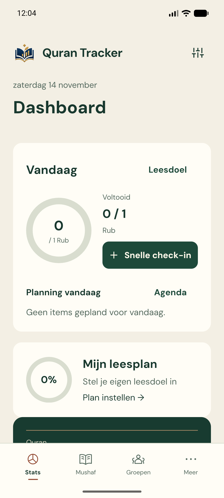
Source identity and corrected reading-plan label.
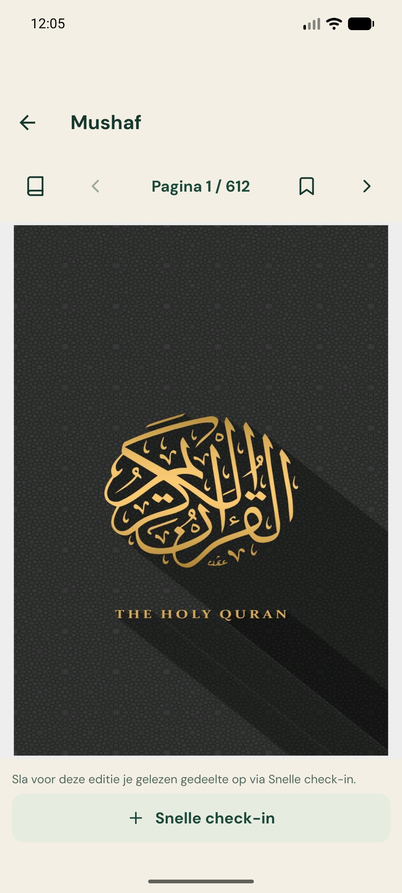
Unmapped cover offers a general check-in instead of marking the page read.
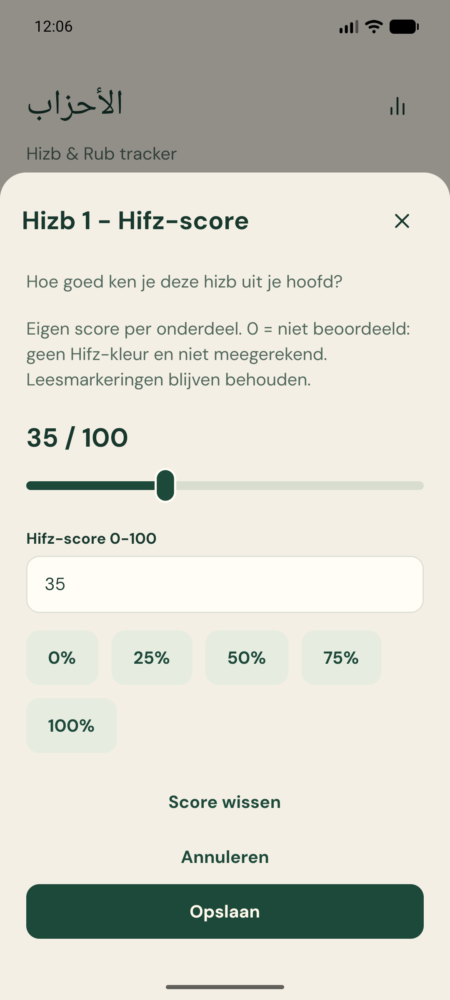
Dragged to 35, saved and reopened, then cleared to restore the test state.
Primary flows
The statistics image contains one actual QA page check-in. The Groups screen is the real guest state; no feed has been fabricated.
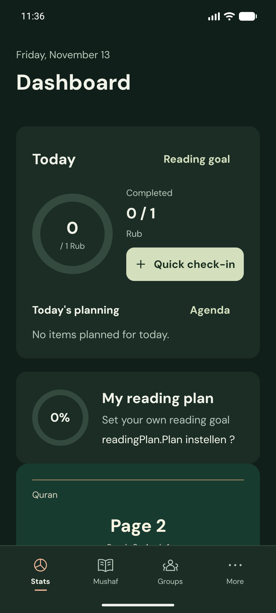
Actual daily goal and reading-plan states; the raw plan key shown here was corrected after capture.
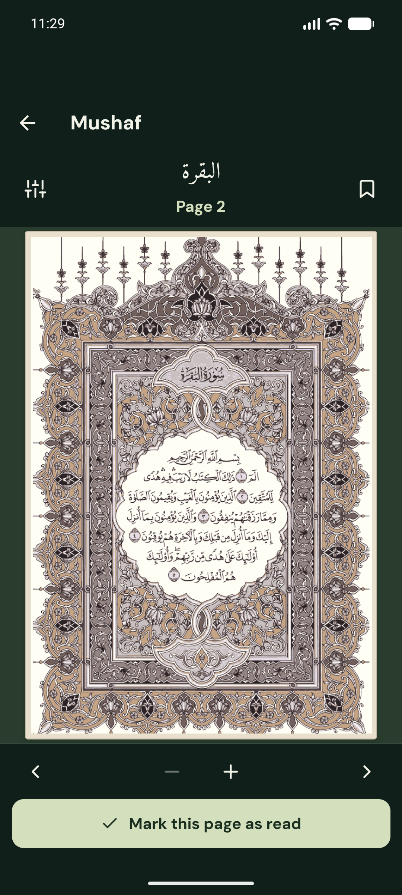
Bundled Hafs page 2, before the explicit check-in.
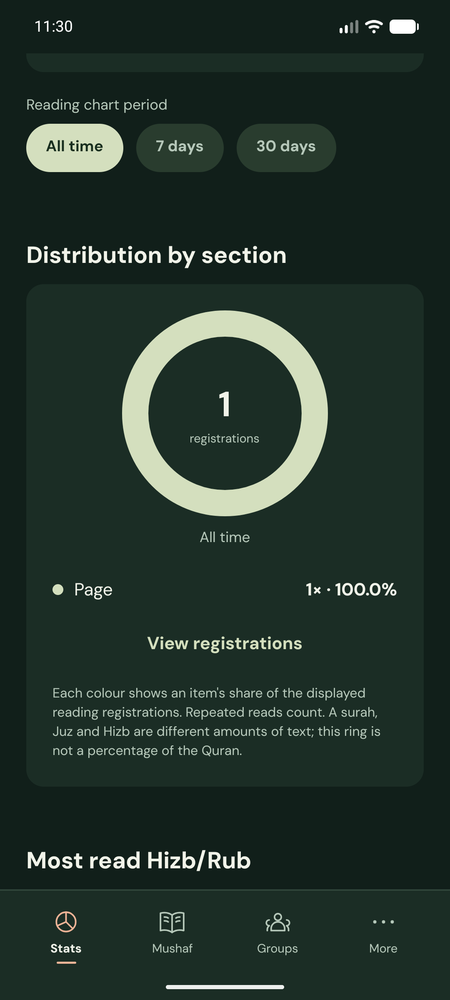
One recorded page; its drilldown showed the corresponding exact ayah range.
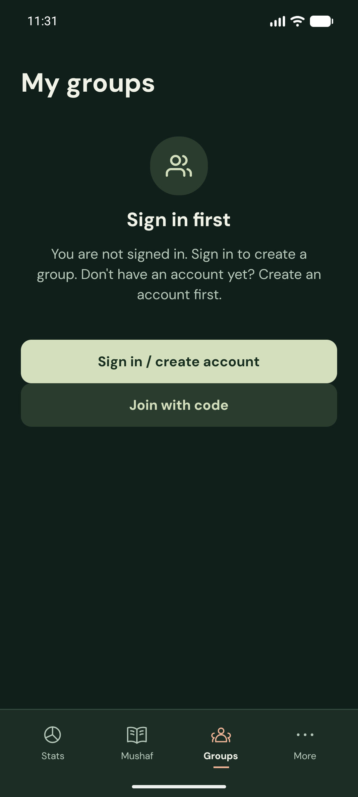
Guest access and join-by-code options. Authenticated group feeds remain unverified.
Downloaded edition
The previously installed IndoPak PDF opened at its cover and advanced to page 2 of 612. The cover incorrectly offered a reading check-in in this build; that defect was reported for correction.
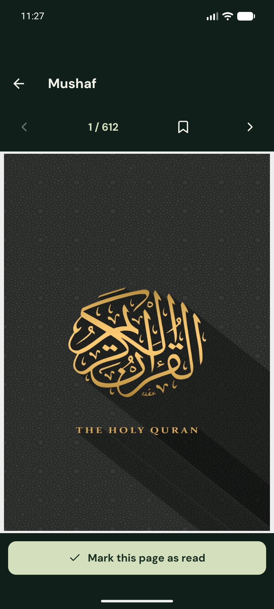
Android release, before the cover check-in correction.